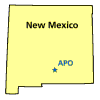

Apache Point Observatory
|
 |
|
Click on the map for a tour of the
observatory |
Apache Point Observatory—located
in Sunspot, New Mexico—is owned and operated by the Astrophysical
Research Consortium (ARC), a not-for-profit consortium of seven research
institutions. ARC's mission is to develop and operate astronomical
research facilities for scientists affiliated with its member institutions
and their collaborators. Principal projects at the Apache Point site are
the 3.5-meter telescope and the Sloan Digital Sky Survey (SDSS).
Apache Point provides a superb location to conduct the sky survey. The
site is surrounded by Lincoln National Forest in the Sacramento Mountains
of south-central New Mexico. At 9,200 feet, the atmosphere contains little
water vapor and few contaminants to degrade celestial images. This
combination of clean air and distance from large cities makes the area's
night sky is among the darkest in the United States. Such conditions
contribute to optimum seeing for astronomers.
Support facilities at the observatory include an operations building
that houses work areas for telescopes and instruments, as well as computer
control rooms for each telescope. There is also a modest machine shop to
handle small-scale projects and dormitory rooms to house overnight
visitors.
 Conducting SDSS required the construction of two telescopes
and a survey support building, as
well as modification of the existing
operations buildings. With major support from the seven collaborating ARC
institutions, APO staff and others, engineering and scientific
collaborations have undertaken the myriad construction, installation, and
commissioning tasks for the telescopes, supporting instruments and
infrastructure.
Conducting SDSS required the construction of two telescopes
and a survey support building, as
well as modification of the existing
operations buildings. With major support from the seven collaborating ARC
institutions, APO staff and others, engineering and scientific
collaborations have undertaken the myriad construction, installation, and
commissioning tasks for the telescopes, supporting instruments and
infrastructure.
Just 250 feet away from the SDSS telescope is the multi-purpose
3.5-meter telescope, which provides
astronomers with data to develop and refine theories on how planets,
stars, nebulae and other celestial objects form and evolve. This telescope
boasts several innovative features including remote control, rapid
instrument change capability, light-weight construction and unique
sky-monitoring capabilities. The ability to operate remotely allows
several astronomers to share the telescope on a given night, using
whichever of the telescope's different instruments best suit their
needs.
Apache Point also provides support for New Mexico
State University's 1.0-meter telescope, operated for research and
graduate instruction. Using design features from the 3.5-meter telescope,
the smaller telescope is computer controlled, either from the site or from
NMSU's campus.
Under agreement with ARC, New Mexico State University operates
Apache Point Observatory. Observatory staff
operate and maintain the telescopes, instruments and infrastructure for
SDSS, including preparation of the plug plates for spectroscopic
surveys.